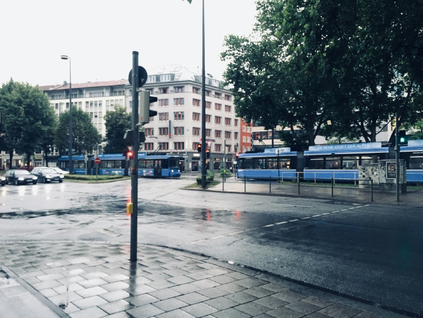
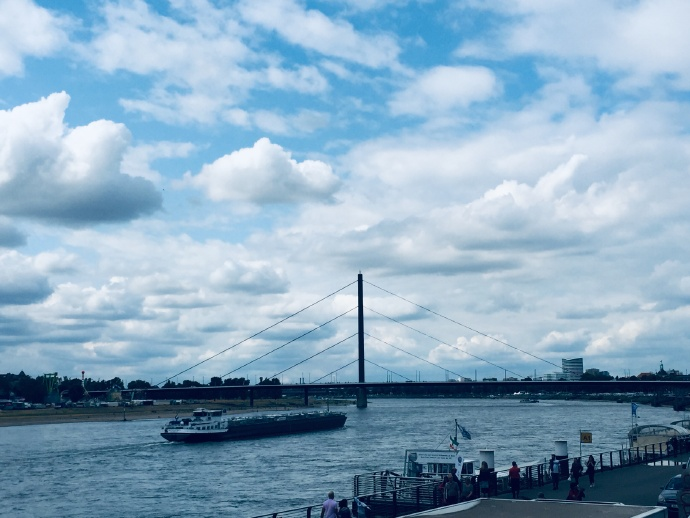
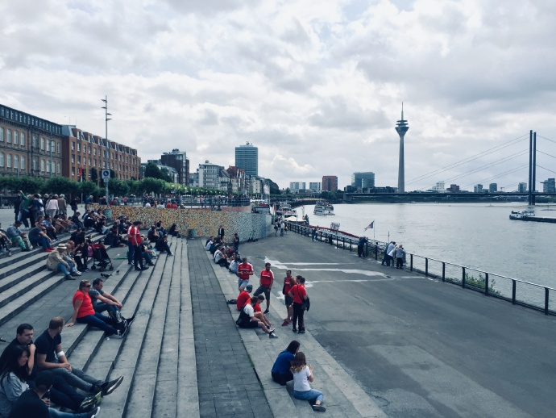
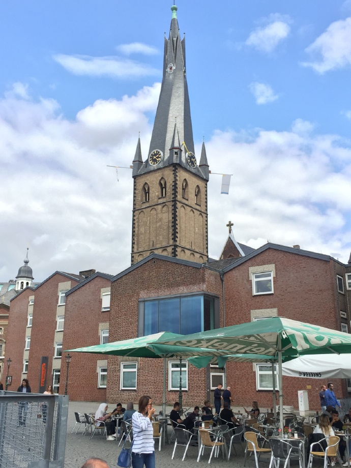
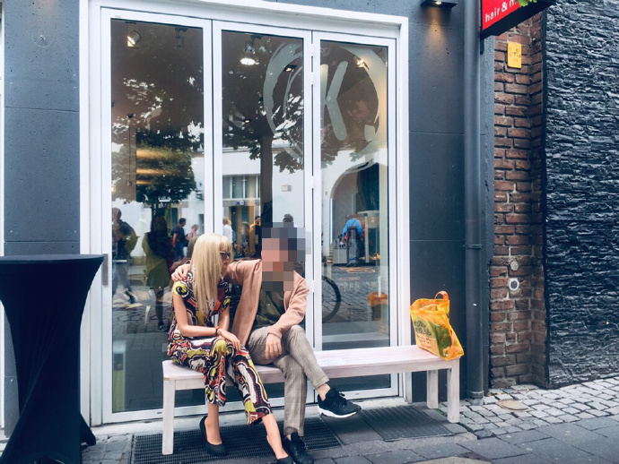
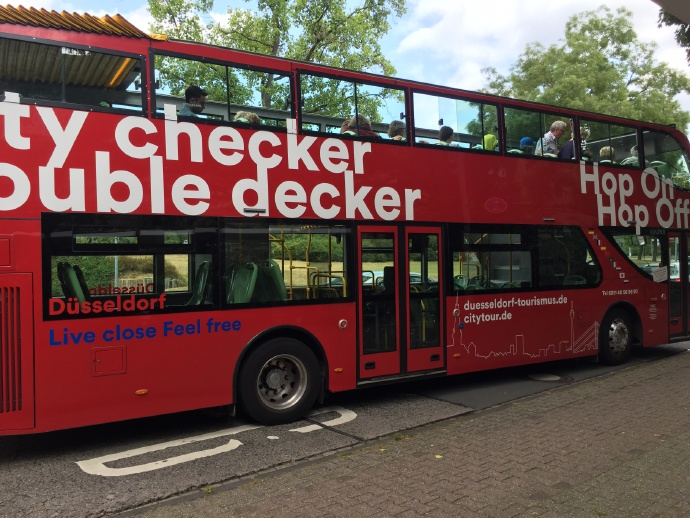
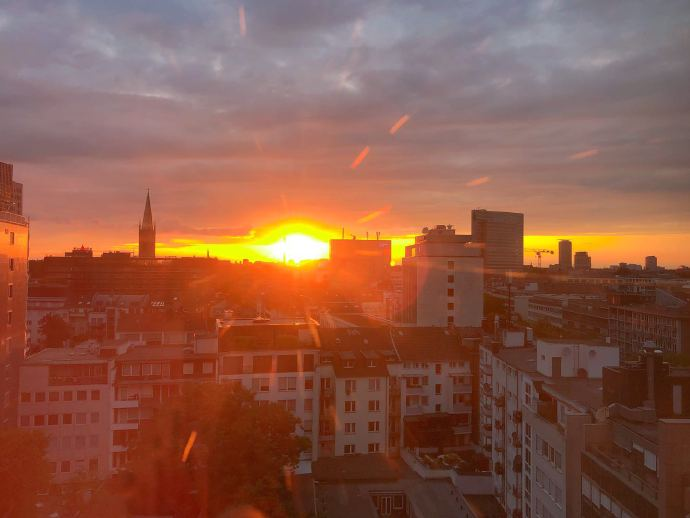
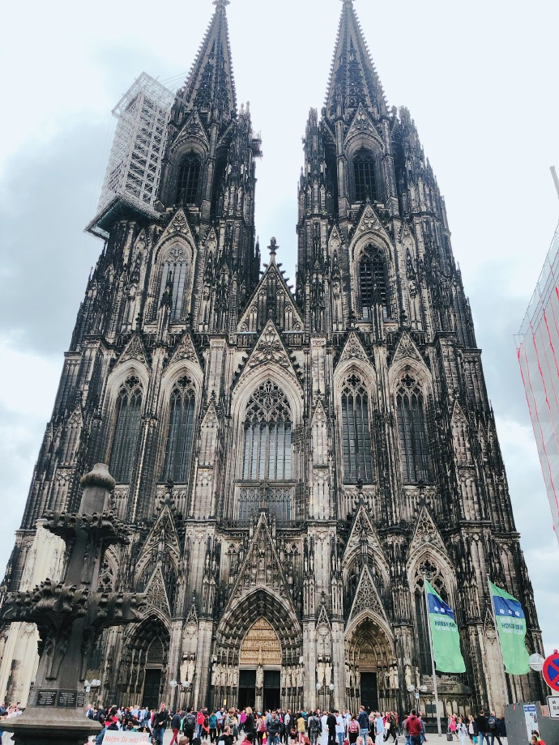
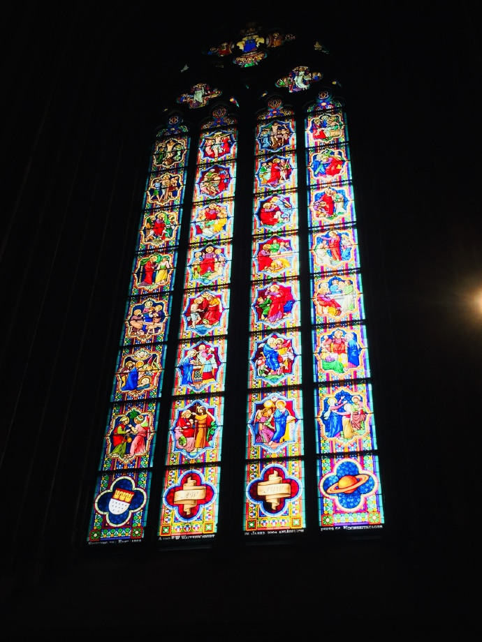

夏休みだ！
今年は海外旅行ですね！
いろいろ悩んでたが、最終的にドイツに行くことになりました。
シェンゲンVISA申請などが、また一肌脱ぎましたが、幸い丸く収まりました。
今回は、5泊7日（往復飛行時間24時間）で計画しました。まずは、ドイツのデュッセルドルフだ！！！
デュッセルドルフ国際空港
東京成田空港から飛行機で12時間くらい飛んでたあと、デュッセルドルフ国際空港空港に着陸し、入国手続を行いました。
元々はスムーズで行けるはずの予想ですが、まさか空港で、すでに一つ目のチャレンジを待ち受けていた。
入国手続時、いきなり係員に、”When you return to Tokyo? Show me the ticket.”
えぇ？！マジで？！そんなもん見るの？？？まだWiFiに繋がらないし、mailboxが開かないけど！後ろも結構人が並んでいたので、なかなか焦りました。
結局、mailboxをアクセスできて、予約していた帰りの飛行機チケット予約確認書を見せたら、素直にハンコをもらいました。
それで終わりと思っていたが、僕の読みが甘がった……
荷物を取ってから、空港を出ようとしたら、また出口ドアーのあたりに、警備員に声をかけられて、今度はいくら現金持ってる？と聞かれました……
えぇぇぇ！どういうこと？答えてもいいの？まぁ……考えてみたら、たぶんアジア系の顔だと、いちいち聞くのも彼らの仕事かもしれません。200ユーロくらい現金もってるよーと答えたら、無事ドアーを通りました。何なんだろうなぁこれ……
- 少なくとも一日23ユーロ以上の支払い能力があると、アプールしてください。（シェンゲンエリア入国の条件のひとつですね。）
- 基本的には、クレジットカードの支払はおすすめです。極一部の時だけ、現金が必要となります。
市内
とりあえず市内をチラ見して、スケジュールの都合で、先にミュンヘンに来ました。ミュンヘンの話は、またミュンヘン編でお話しますんで、そちらにご覧ください。

ホテル周辺
結論から言うと、今回は日航デュッセルドルフホテルを予約して本当に大正解でしたー
ホテルのまわりは、デュッセルドルフのジャパンセンターというエリアで、アジア系の人がよく見かけますし、スーパーや、居酒屋、中華物産店にもありますね。
ホテルの場所も、デュッセルドルフ中央駅の直ぐ隣ですので、google map頼りに、結構簡単に探し出しました。
ホテルあたりの教会もすごくキレイ！
無事チェックイン手続きを終えて、いざ観光開始のことですねー
※ちなみに、booking.comで予約した時、日本語対応できますよとかのコメントがありますが、僕らが行った時、特にそんな感じがなく、英語でやり取りをしました。
あと、パトカーもBMWがいっぱいで、さすが産み親のドイツだね〜
ライン川沿
キタァァァ！ライン川だ！！！！見ろう諸君！楽しいぞー



このあたりで、ダラダラして、オシャレなカフェで一服するや、川沿いのレストランバーで、ドイツビールを楽しむとか、これぞ休暇の感じですね。
旧市街
ライン川沿を後にして、徒歩やTier(ある種のレンタルスクーター)を頼りに旧市街にたどり着きました。Tier万々歳！気持ちいい！
当時は、ちょうど何かしらのパレードが開催されて、街中かなり賑わっていました。
面白いお店もたくさん並んでいて、どれも行きたがったが、あいにくそんなんに時間の余裕がありませんでした。
ヨーロッパの美人もなかなかで、僕もつい……

冗談です、これは人形ですね〜
びっくりした？ｗ
ケーニヒスアレー
旧市街を離れ、今回は観光バスに乗りました。

観光バスもまたいいヤツで、天気が良いので、運転手に屋根をオープンしてもらいました。
街一週後、降りた場所が、デュッセルドルフの繁華街ーケーニヒスアレーです。ケーニヒスアレーはドイツ語で、王様の街という意味らしい。名前通り、景色も、お店もサイッコー
ホテル戻り
別に一日のスケジュールをレポしたわけじゃないので、実際はデュッセルドルフで2~3日をかけた話です。
ホテルのバーで、異国のお寿司を頂きました。
一杯を楽しんだ後、疲れた体には、ベッドが一番〜
ちなみに、ドイツの緯度が高いので、夏だと、夜遅くまで太陽がまだ空にいますね。ご覧ください、22時の夕陽です。お日様に向けて、おやすみ〜

ケルン
ケルンはデュッセルドルフから列車で、30分のどころです。大聖堂が見たくて、ついでに行きました。
ケルン大聖堂
言葉は無力です、どうぞ感じてください、ケルン大聖堂です。

まだ修繕工事中ですが、ほんとに心を打たれるほどの「大聖堂」です！
もっと写真出しますよー

デュッセルドルフ戻り
帰りに僕に大好物ー本屋さんにもよって、地元紹介誌を買いました。
チップ事情
ヨーロッパ全域的には、チップを渡す習慣がありますが、外国人には特に強要はしません（人種も違うアジア系は特に）。ただ、一部のお店にはチップが決済システム的に、必須になっており、その場合、素直に渡してください。（クレジットカードの支払にも、まずチップの金額を入力後の支払となります。）金額は会計金額によりますが、基本的には１〜２ユーロで十分です。会計金額の10%はせいぜいの限界ので、それ以上を渡すと、成金か、ただのバカなのか、変に思われがちですね。
長文失礼しました
かなり休暇には向いてるデュッセルドルフの話は、このあたりで終わらせたいと思います。次回は、ミュンヘンでの話をしましょう、どうぞご期待くださいませー
ではでは～